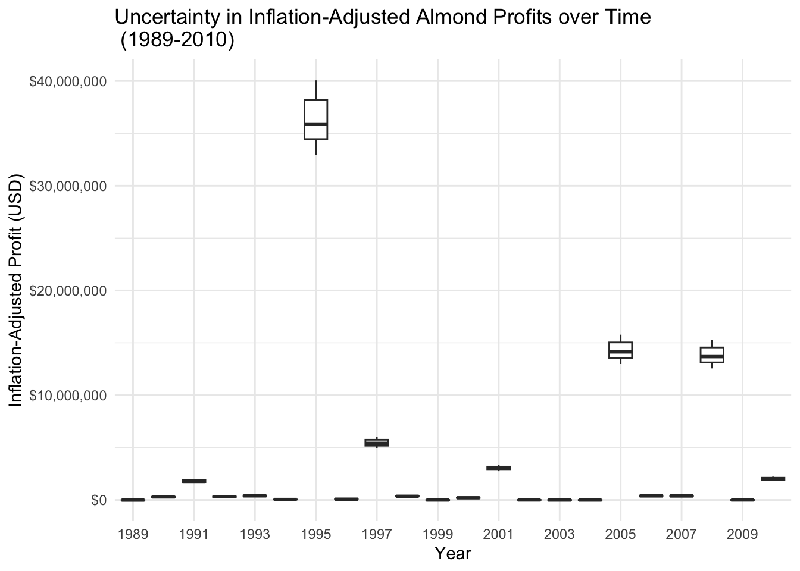
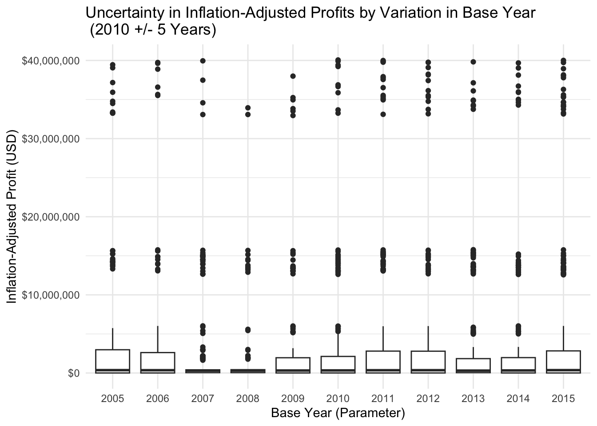

library(readr)
library(janitor)Assignment 3: Profit with Almond Yield
Background
The total almond yield equation is the following:
Y = -0.015Tn2 - 0.0046Tn2^2 - 0.07P1 + 0.0043P1^2 + 0.28
where: Y: represents the yield anomaly (ton acre^-2), Tn2: average minimum temperature for February (°C), P1: total precipitation for January (mm).
To convert profits into real profits adjusted to the base year, we used the following equation:
Inflation Adjusted Profit (base year) = Nominal Profitt x Inflation Adjustmentt
Inflation Adjustment = Price Indexbase year / ((1 + Inflation Rate1) x (1 + Inflation Rate2) x (1 + Inflation Ratet))
Profit Model Assumptions
Real profits are calculated in 2010 dollars (base year), using cumulative inflation from 1988–2010.
Constant Almond Price per Ton: The price of almonds is assumed to be $5,000 per ton for all years.
Inflation rates used are annual averages, taken from U.S. Consumer Price Index (CPI) data.
Load Libraries
Load Model and Data
# Load Profit Model
source("almond_yield_anomoly.R")
# Load Data
data <- read_delim("clim.txt", delim = " ", col_names = TRUE, quote = "") %>%
# Clean column names
clean_names()Run Almond Model
# Run Model
almond_yield_anomaly_from_daily(data)# A tibble: 22 × 3
water_year avg_min_temp_c total_precip_mm
<dbl> <dbl> <dbl>
1 1989 8.64 2.80
2 1990 8.68 55.8
3 1991 10.4 135.
4 1992 11.9 69.6
5 1993 10.9 77.9
6 1994 9.62 34.8
7 1995 12.6 677.
8 1996 12.0 40.3
9 1997 9.99 285.
10 1998 11.5 89.8
# ℹ 12 more rows$yield_anomalies
1989 1990 1991 1992 1993 1994
-0.3552237 9.2906757 68.9130633 15.4280698 20.2083803 2.4820009
1995 1996 1997 1998 1999 2000
1919.9811511 3.5818399 329.6938750 27.8636956 -0.1436364 9.5999883
2001 2002 2003 2004 2005 2006
159.5119587 0.2450914 -0.2585997 -0.2367722 656.3724121 18.6324135
2007 2008 2009 2010
20.2007396 576.2821943 0.7367438 153.7655092
$mean_yield_anomaly
[1] 181.4453
$max_yield_anomaly
[1] 1919.981
$min_yield_anomaly
[1] -0.3552237# Save results
almond <- almond_yield_anomaly_from_daily(data)# A tibble: 22 × 3
water_year avg_min_temp_c total_precip_mm
<dbl> <dbl> <dbl>
1 1989 8.64 2.80
2 1990 8.68 55.8
3 1991 10.4 135.
4 1992 11.9 69.6
5 1993 10.9 77.9
6 1994 9.62 34.8
7 1995 12.6 677.
8 1996 12.0 40.3
9 1997 9.99 285.
10 1998 11.5 89.8
# ℹ 12 more rows# View results (in tons/acre)
almond$min_yield_anomaly[1] -0.3552237almond$mean_yield_anomaly[1] 181.4453almond$max_yield_anomaly[1] 1919.981almond$yield_anomalies 1989 1990 1991 1992 1993 1994
-0.3552237 9.2906757 68.9130633 15.4280698 20.2083803 2.4820009
1995 1996 1997 1998 1999 2000
1919.9811511 3.5818399 329.6938750 27.8636956 -0.1436364 9.5999883
2001 2002 2003 2004 2005 2006
159.5119587 0.2450914 -0.2585997 -0.2367722 656.3724121 18.6324135
2007 2008 2009 2010
20.2007396 576.2821943 0.7367438 153.7655092 Run Profit Model
# Load inflation-adjusted profit function
source("inflation_adjusted_profit.R")
# Run the profit model with inflation adjustment
profit_summary <- inflation_adjusted_profit(
yield = almond,
inflation_file = "macrotrends_us_inflation.csv",
price_per_ton = 5000,
base_year = 2010,
year_1 = 1988
)
# View inflation-adjusted profit results
profit_summary$total_inflation_adjusted_profit[1] 79780032profit_summary$min_inflation_adjusted_profit[1] -10354.77profit_summary$mean_inflation_adjusted_profit[1] 3626365profit_summary$max_inflation_adjusted_profit[1] 36575641profit_summary$yield year almond_yield_anomalies profit_before_inflation us_inflation_rate
1 1989 -0.3552237 -1776.1184 4.83
2 1990 9.2906757 46453.3784 5.40
3 1991 68.9130633 344565.3165 4.24
4 1992 15.4280698 77140.3488 3.03
5 1993 20.2083803 101041.9013 2.95
6 1994 2.4820009 12410.0043 2.61
7 1995 1919.9811511 9599905.7555 2.81
8 1996 3.5818399 17909.1994 2.93
9 1997 329.6938750 1648469.3750 2.34
10 1998 27.8636956 139318.4781 1.55
11 1999 -0.1436364 -718.1822 2.19
12 2000 9.5999883 47999.9414 3.38
13 2001 159.5119587 797559.7937 2.83
14 2002 0.2450914 1225.4571 1.59
15 2003 -0.2585997 -1292.9987 2.27
16 2004 -0.2367722 -1183.8611 2.68
17 2005 656.3724121 3281862.0606 3.39
18 2006 18.6324135 93162.0674 3.23
19 2007 20.2007396 101003.6982 2.85
20 2008 576.2821943 2881410.9715 3.84
21 2009 0.7367438 3683.7191 -0.36
22 2010 153.7655092 768827.5459 1.64
NPV
1 -10354.770
2 297301.622
3 1805522.259
4 310875.606
5 399115.510
6 44800.115
7 36575640.929
8 70383.154
9 5505887.713
10 355262.119
11 -2291.001
12 210239.743
13 3054654.010
14 3173.934
15 -4228.106
16 -4356.609
17 14407374.446
18 394075.545
19 388864.238
20 13946029.102
21 2357.580
22 2029704.721Informal Sensitivity Analysis
Parameter 1: price_per_ton is defaulted to $5,000/ton. Let’s try +/- 10%.
Parameter 2: base_year is defaulted to 2010. Let’s try +/- 5 years.
# Turn off scientific notation
options(scipen=999)
# Set number of samples
n_samples <- 100
# Parameter 1: Price (per ton)
deviation <- 0.1 #10%
base_price <- 5000
price_thresh <- runif(
min = base_price - (deviation * base_price),
max = base_price + (deviation * base_price),
n = n_samples
)
# Parameter 2: Base Year
deviation <- 5
base_year <- 2010
sample_years <- sample(
(base_year - 5):(base_year + 5),
size = n_samples,
replace = TRUE)
# Put samples together
params <- cbind.data.frame(price_per_ton = price_thresh, base_year = sample_years)
results <- params %>% pmap(inflation_adjusted_profit,
yield = almond,
inflation_file = "macrotrends_us_inflation.csv",
year_1 = 1988)
# Pull the time series data from "yield"
time_series <- map_df(results, "yield") %>%
# Add parameters
cbind(params)
colnames(time_series) <- c("year", "yield_anamolies", "profit_before_inflation", "inflation_rate", "profit_adjusted_inflation", "price_per_ton", "base_year")
# Plot results
# Graph 1: uncertainty in profits through time
ggplot(time_series, aes(as.factor(year), profit_adjusted_inflation)) +
geom_boxplot() +
scale_x_discrete(breaks = function(x) x[seq(1, length(x), 2)]) +
scale_y_continuous(labels = scales::label_dollar()) +
labs(x = "Year",
y = "Inflation-Adjusted Profit (USD)",
title = "Uncertainty in Inflation-Adjusted Almond Profits over Time \n (1989-2010)") +
theme_minimal()
# Graph 2: how profit varies with base year parameter
ggplot(time_series, aes(as.factor(base_year), profit_adjusted_inflation)) +
geom_boxplot() +
scale_y_continuous(labels = scales::label_dollar()) +
labs(x = "Base Year (Parameter)",
y = "Inflation-Adjusted Profit (USD)",
title = "Uncertainty in Inflation-Adjusted Profits by Variation in Base Year\n (2010 +/- 5 Years)") +
theme_minimal()
Results
A simple informal sensitivity analysis of inflation-adjusted almond yield profit was conducted by adjusting two parameters: price_per_ton and base_year. Price per ton was varied by 10 percent above and below the default value of $5,000, and base year was varied by 5 years above and below the default value of 2010. 100 samples from each variation were generated and combined into a dataframe. This dataframe was mapped into the inflation_adjusted_profit() function, and the results were combined with the parameter samples in a time_series dataframe.
Uncertainty in Profits over Time
Graph #1 shows us the uncertainty in inflation-adjusted profits based off variation in the two chosen parameters, price_per_ton and base_year, for the time period 1989-2010 (the time period for which we previously generated almond yield anomaly estimates). From the graph, you can see that 1995 is more sensitive to the most variation in profit, perhaps because this was the year of maximum yield anomaly from our original model. The maximum yield anomaly (~ 1920 tons/acre) is more susceptible in changes in price and base year, and general sensitivity in the model decreases as almond yield anomaly decreases. Over the majority of the years, variation is minimal.
Profit Variation by Base Year
The US dollar profit value is calculated with respect to base_year, and it provides the upper bounds for calculating cumulative inflation since 1988. Base year was varied 5 years from the default value of 2010, providing a range from 2005-2015. The boxplots on Graph #2 show profit variation with respective base_year, and they appear to be relatively stable (minimal change in profit when the time range for calculating cumulative inflation changes) across the variation base year range. You can see the general groupings of maximum and mean almond yield anomalies in the outlier points, but these groupings are consistent across base years. Thus, it makes sense that 1995 would stand out in Graph #1, as this is an outlier year. Our main takeaway is that the model is robust across some variation in parameters, particularly base_year.